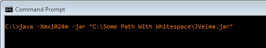
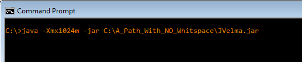
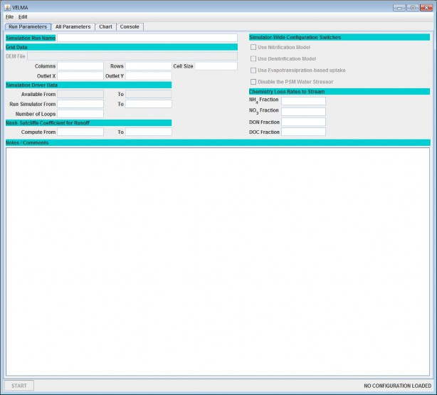
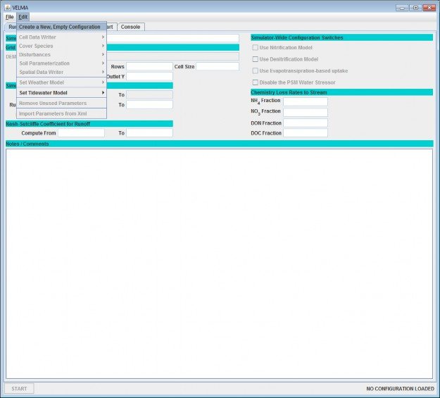
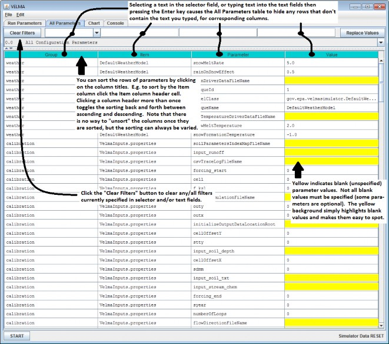
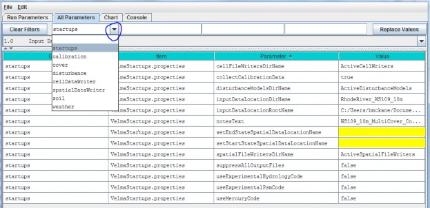
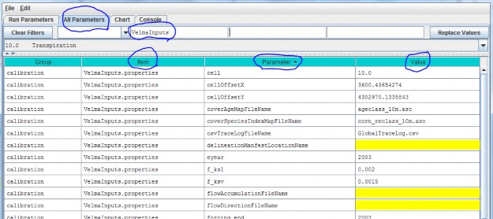

V. Creating a Simulator Configuration (New VELMA Application)
- Required Input Files
- Configuration Steps
- Start the JVelma GUI
- Using the GUI
- Using the GUI to Specify Startup and Input Parameters
- Overview of the All Parameters Table of Contents (TOC)
- All Parameters Table of Contents
Required Input Files
The following simulation data input files must be available prior to creating a new VELMA application:
- JPDEM flat-processed Grid ASCII (.asc) DEM map file. (see JPDEM user guide in Appendix 7)
- Cover Species ID Grid ASCII map (.asc) file.
- Cover Species Age Grid ASCII map (.asc) file.
- Soil Parameters ID Grid ASCII map (.asc) file.
- Daily Rainfall driver data file (.txt or .csv) file.
- Daily Air Temperature data file (.txt or .csv) file.
Configuration Steps
With the above files available, perform the following steps:
- Start the JVelma graphical user interface (GUI)
- Create a New Simulator Configuration
- Specify Startup Parameters
- Specify Input Parameters
- Specify Weather Parameters
- Add and Specify Parameters for Each Cover Species
- Add and Specify Parameters for Each Soil Parameterization
Start the JVelma GUI
To start the JVelma GUI, open a Windows command prompt, and launch the GUI via Java and the JVelma.jar file.
Here is an example of the form the startup command takes:
C:\> java -Xmx1024m -jar C:\Some\full\Path\JVelma.jar
Of course, replace C:\Some\full\Path\ with the actual, fully-qualified path name of the location where your copyof the JVelma.jar file resides.
Here are a couple of screen captures showing actual command lines for starting JVelma:

(In the above screen-capture, the double-quotes around the fully-qualified path+name of the JVelma.jar file arerequired because the text of the path contains whitespace.)

(When there is no whitespace in the entire path the double-quotes are not required.)
The "-Xmx1024m" command line option specifies the amount of memory available to the JVelma GUI and simulator. Thevalue 1024 is in Megabytes, so this command line allocates a 1 Gigabyte memory space for the JVelma GUI andsimulator to run in. You can allocate more memory than 1 GB (e.g. the option "-Xmx4096m" would allocate 4 GB)but if you allocate more memory than your computer can make available, JVelma will fail to start properly.
Once you type in the command line and press the enter key, the JVelma GUI should begin running. Initially, theGUI looks like this:

Using the GUI
Click the Edit menu's Create a New, Empty Configuration item:

Clicking this item creates a new, empty simulation configuration in the JVelma GUI and opens the All Parameters table view. The All Parameters table lists the Group, Item and Parameter keys and the currentvalue of all the parameters used by a single VELMA simulation run. When we speak of the "SimulationConfiguration", this list of parameters is what we're speaking of.
For demonstration purposes, here is an annotated screen-captured snapshot of the All Parameters table for anexisting simulator configuration (cells under the Value column will be blank for new simulator configurations):

In addition to filtering by an arbitrary text string, the filter field at the top of the table can be set to anyof several pre-composed filtering expressions.
For example, In the All Parameters table, click "Clear Filters" at the left of side of the filter fields, thenclick the drop-down button ( ) on theright side of the leftmost filter field to display a drop-down menu (see demonstration, below).
) on theright side of the leftmost filter field to display a drop-down menu (see demonstration, below).
Using the GUI to Specify Startup and Input Parameters
Specify Startup Parameters
In the All Parameters table, click the first (leftmost) filter field's drop-down button and select "startups"from the drop-down list:

The resulting display shows 13 "startups" parameters under the 3rd column. For now, we will focus on 2startup parameters that VELMA uses to locate simulation input files at the start of a simulation. You will needto specify a valid value in the 4th column for these:
| inputDataLocationDirName: | The name of the directory containing your simulation input data files |
| inputDataLocationRootName | The fully-qualified path above the directory name you specified for inputDataLocationDirName |
Specify Input Parameters
Under the All Parameters menu tab, in the 2nd filter field to the left of the "Clear Filters" button, type"VelmaInputs" (case sensitive, without the double-quotes):
In the displayed subset of configuration parameters, enter values for the following parameters:
| input_dem | The name (plus extension, ".asc") of this simulation's DEM spatial data file. The simulator will lookfor the file in the directory specified by the inputDataLocationDirName + "/" + inputDataLocationRootName thatyou specified as Startups parameters. |
| cell | The width of a cell in the DEM grid (should match the "cellsize" header value in the DEM Grid ASCII file andwill be a value in meters). |
| ncol | The number of columns in the DEM grid (should match the DEM Grid ASCII file's ncols header value). |
| nrow | The number of rows in the DEM grid (should match the DEM Grid ASCII file's nrows header value). |
| cellOffsetX | Horizontal (column) offset of the DEM's zeroth pixel in meters. |
| cellOffsetY | Vertical (row) offset of the DEM's zeroth pixel in meters. |
| outx | The zero-based x-coordinate (column index) of the outlet cell for this simulation's watershed. |
| outy | The zero-based y-coordinate (row index) of the outlet cell for this simulation's watershed. |
| coverAgeMapFileName | The name (and ".asc" extension) of this simulation's cover species age spatial data map. |
| coverSpeciesIndexMapFileName | The name (and ".asc" extension) of this simulation's cover species ID spatial data map. |
| soilParametersIndexMapFileName | The name (and ".asc" extension) of this simulation's soil parameterizations ID spatial data map. |
| forcing_start | The first year (inclusive) of temporal data available for simulation runs. |
| forcing_end | The last year (inclusive) of temporal data available for simulation runs. |
| syear | The starting year of the simulation run. |
| eyear | The ending year of the simulation run. |
| input_runoff | The name of the observed runoff data for simulation runs. (Specifying this file is optional, buthighly recommended.) |
| input_stream_chem | The name of the observed stream chemistry data for simulation runs. (Specifying this file is optional, but highly recommended.) |
| run_index | The name of the directory where the VELMA simulation will save simulation results files. |
| initializeOutputDataLocationRoot | The fully-qualified path above the directory name you specifiedfor the run_index. |
The drop-down filter field menu above the "Group" column can also be used to add and specify parameters for theother parameter categories listed: cover, disturbance, cellDataWriter, spatialDataWriter, soil,and weather:

However, we recommend that you use the "All Parameters Table of Contents" described in the next section to configure these and other subsets of parameters.